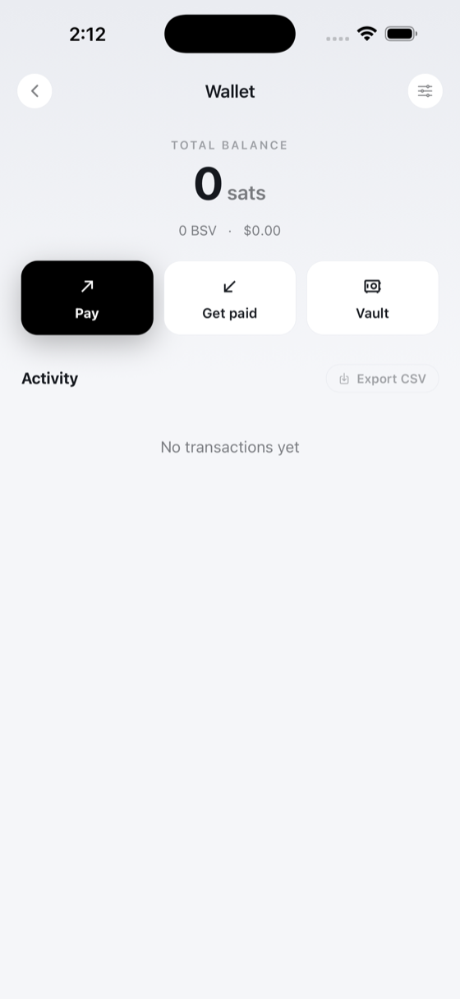
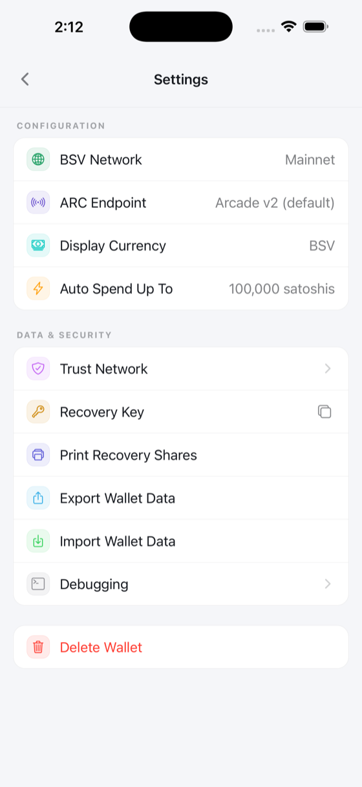
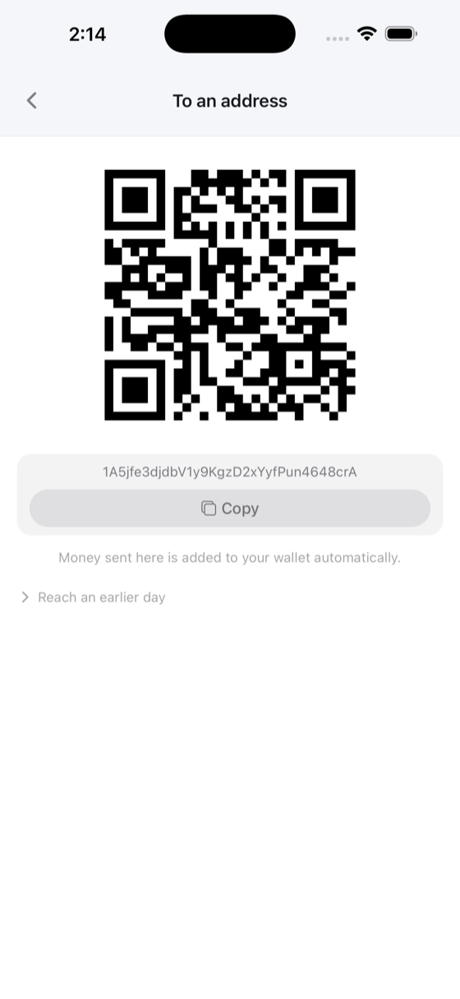
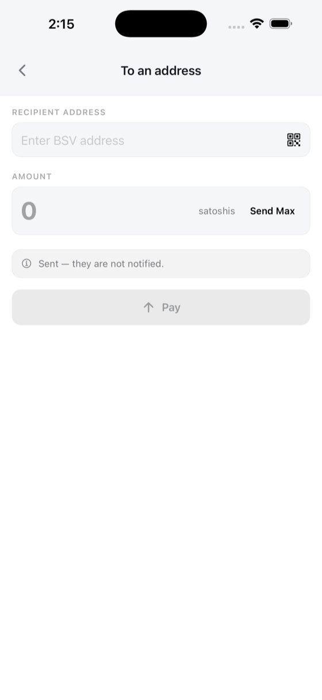
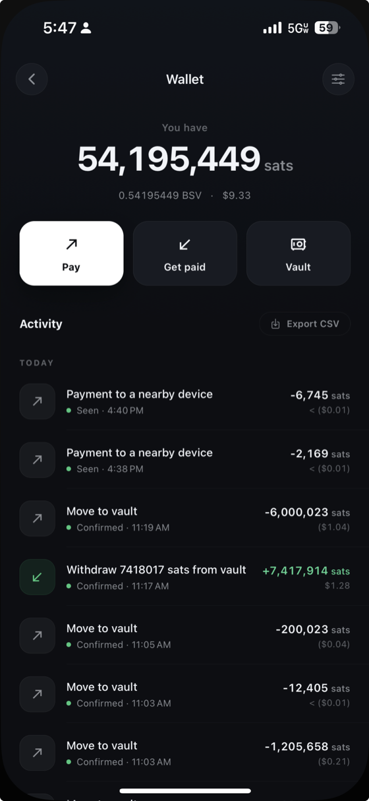

Wallet & Payments
Your wallet lives on your device — only you hold the keys. Check your balance, send and receive BSV, and authorize micropayments to Web3 apps.
Wallet overview
Open the menu and tap Wallet to see your wallet. The main screen shows:
- Your current balance in satoshis or fiat. Tap it to refresh.
- Buttons for Pay, Get paid, and the Vault, with your recent Activity listed below them.
- Your Identity Key with a copy button.
- A Settings row that opens the full wallet configuration screen.

Wallet configuration
Tap Settings from the wallet overview to access all wallet configuration options:
- BSV Network — switch between Mainnet, Testnet, and Teratest. Changing the network rebuilds the wallet on the selected chain.
- Trust Network — manage your trusted identity certifiers.
- Recovery Phrase — tap to copy your mnemonic to the clipboard.
- Print Recovery Shares — generate printable backup sheets (see Backup & Recovery below).
-
Export Wallet Data — export your wallet database as a
.dbbackup file via the system share sheet (see Exporting & Importing). -
Import Wallet Data — restore a previously exported
.dbbackup via the system document picker (see Exporting & Importing). - Logout — clear all wallet data and return to Web2 mode.

Micropayments in Web3 apps
When you visit a Web3-enabled website, it can request a payment from your wallet. A permission sheet slides up from the bottom of the screen showing:
- The requesting website's domain.
- A description of what you are paying for.
- The exact amount in satoshis (and fiat equivalent).
You can tap Authorize to approve or Reject to decline. No payment is ever made without your explicit approval.
Tip: Micropayments on BSV are typically fractions of a cent, making it practical to pay for individual actions like saving a note, posting a message, or accessing premium content.

Peer-to-peer identity payments
The Payments screen lets you send BSV directly to another person using their identity rather than a raw blockchain address. Search for the recipient by name across the BSV identity network, enter an amount, and send.
Incoming payments appear in a list. You can accept them individually, or tap Accept All to batch-accept every pending payment at once. A result banner confirms how many were accepted.

Get paid to an address
For compatibility with traditional BSV wallets and services, BSV Browser can receive standard address-based payments. Open Wallet > Pay, choose Get paid, then tap To an address.
- A unique address and QR code are generated for each day. Share them with anyone who wants to send you BSV. Incoming funds are automatically detected and imported into your wallet — no manual action needed.
- Tap Copy to put the address on your clipboard, or let the sender scan the QR code.
- Tap Reach an earlier day if you need to check a previous day's receive address.

Paying to an address
To send in the other direction, open Wallet > Pay, stay on Pay, and tap To an address. Enter the recipient's BSV address — typing it, pasting it, or tapping the QR icon to scan it — and the amount you want to send.
- Tap Pay to broadcast the transaction.
- Tap Send Max to send your full available balance.
- The screen reminds you that a payment sent this way is not announced to the recipient — they will simply see the funds arrive.
A success or error banner appears after the transaction is submitted.

Activity
Your transaction history is on the wallet screen itself, under Activity, below the balance and the three buttons — so checking whether a payment went through costs no extra navigation. Entries are grouped by day, and each row reads left to right: an arrow showing the direction, what the payment was, then its status and the amount. Money coming in is shown in green.
Each row carries a short status:
- Confirmed or Seen — settled, and shown quietly, because nothing is needed from you.
- Broadcasting, or Offline · queued when you have no connection — still on its way.
- Not Sent, Unsigned or Non-final — highlighted, because they may want your attention.
- Failed — the transaction did not go through.
Tap a row to expand it. You can View on block explorer, Copy transaction ID, Copy BEEF as hex, Refresh status, and Cancel transaction for one that has not gone out yet. Export CSV, at the top of the list, saves the whole history.
